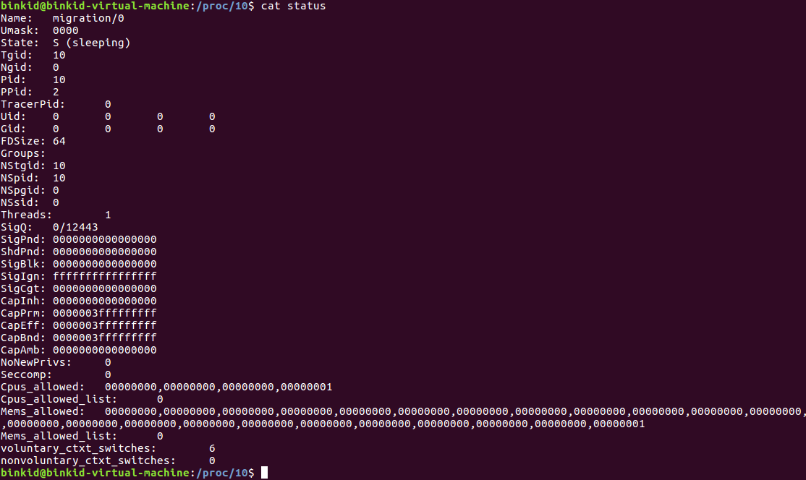
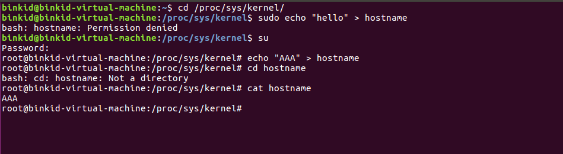

内核中分别找出一处proc和seqfile的完整使用过程并记录下来
proc
proc_create函数开始，看看其中的实现
1 | static inline struct proc_dir_entry *proc_create( |
函数返回一个proc_dir_entry。可以看到proc_create中直接调用了proc_create_data，而该函数主要完成2个功能
- 调用__proc_create完成具体proc_dir_entry的创建。
- 调用proc_register把entry注册进系统。
1 | struct proc_dir_entry *proc_create_data(const char *name, umode_t mode, |
先看proc_dir_entry的创建，这里通过__proc_create函数，其实该函数内部也很简单，就是为entry分配了空间，并对相关字段进行设置，主要包含name,namelen,mod，nlink等。创建好后，就设置操作函数proc_fops和data。然后就调用proc_register进行注册。
1 | static int proc_register(struct proc_dir_entry * dir, struct proc_dir_entry * dp) |
函数首先分配一个inode number，然后根据entry的类型对其进行操作函数赋值，主要分为目录、链接、文件。这里我们只关注文件，文件的操作函数一般由用户自己定义，即上面我们设置的ops，这里仅仅是设置inode操作函数表，设置成了全局的proc_file_inode_operations，然后插入到父目录的子文件链表中，注意是头插法。基本结构如下，其中每个子节点都有指向父节点的指针。
seqfile
UNIX的世界里，文件是最普通的概念，所以用文件来作为内核和用户空间传递数据的接口也是再普通不过的事情，并且这样的接口对于shell也是相当友好的，方便管理员通过shell直接管理系统。由于伪文件系统proc文件系统在处理大数据结构（大于一页的数据）方面有比较大的局限性，使得在那种情况下进行编程特别别扭，很容易导致bug，所以序列文件接口被发明出来，它提供了更加友好的接口，以方便程序员。
在用户空间进行“读”、“写”
读进程10的状态信息

写hostname
